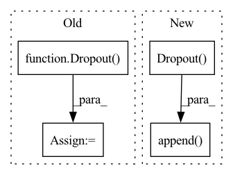

Pattern ID :9574

Before Change
self.compile(loss=torch.nn.CrossEntropyLoss(),
optimizer=optim.Adam(paras, lr=lr),
metrics=[Accuracy()])
self.dropout = Dropout(dropout)
self.layers = layers
def forward(self, x, nbrs):
After Change
super().__init__()
conv = []
conv.append(nn.Dropout(dropout))
for hid, act in zip(hids, acts):
conv.append(MedianConvolution(in_channels,
hid,
bias=bias))
In pattern: SUPERPATTERN
Frequency: 4
Non-data size: 4
Instances
Fragment ID: 34209469
Project Name: edisonleeeee/graphgallery
Commit Name: 4a0b252917d5068be1fc68f2752b58b6119c3a21
Time: 2021-02-09
Author: cnljt@outlook.com
File Name: graphgallery/nn/models/pytorch/median.py
M Class Name: MedianGCN
N Class Name: MedianGCN
M Method Name: __init__(9)
N Method Name: __init__(9)
M Parent Class: TorchKeras
N Parent Class: TorchKeras
M File Name: graphgallery/nn/models/pytorch/median.py
N File Name: graphgallery/nn/models/pytorch/median.py
M Start Line: 25
M End Line: 47
N Start Line: 21
N End Line: 33
'>
Before Change
self.act_fns = act_fns
self.layers = layers
self.dropout = Dropout(dropout)
self.compile(loss=torch.nn.CrossEntropyLoss(),
optimizer=optim.Adam(paras, lr=lr),
metrics=[Accuracy()])
After Change
super().__init__()
head = 1
conv = []
conv.append(nn.Dropout(dropout))
for hid, num_head, act in zip(hids, num_heads, acts):
conv.append(GATConv(in_channels * head,
hid,
heads=num_head,
'>
Fragment ID: 34209471
Project Name: edisonleeeee/graphgallery
Commit Name: 4a0b252917d5068be1fc68f2752b58b6119c3a21
Time: 2021-02-09
Author: cnljt@outlook.com
File Name: graphgallery/nn/models/pyg/gat.py
M Class Name: GAT
N Class Name: GAT
M Method Name: __init__(10)
N Method Name: __init__(10)
M Parent Class: TorchKeras
N Parent Class: TorchKeras
M File Name: graphgallery/nn/models/pyg/gat.py
N File Name: graphgallery/nn/models/pyg/gat.py
M Start Line: 27
M End Line: 58
N Start Line: 23
N End Line: 45
'>
Before Change
paras.append(dict(params=layer.parameters(), weight_decay=0.))
self.layers = layers
self.dropout = Dropout(dropout)
self.compile(loss=torch.nn.CrossEntropyLoss(),
optimizer=optim.Adam(paras, lr=lr),
metrics=[Accuracy()])
After Change
attn_drop=dropout))
conv.append(activations.get(act))
conv.append(nn.Flatten(start_dim=1))
conv.append(nn.Dropout(dropout))
in_channels = hid
head = num_head
conv.append(GATConv(in_channels * head,
'>
Fragment ID: 34209470
Project Name: edisonleeeee/graphgallery
Commit Name: 4a0b252917d5068be1fc68f2752b58b6119c3a21
Time: 2021-02-09
Author: cnljt@outlook.com
File Name: graphgallery/nn/models/dgl_torch/gat.py
M Class Name: GAT
N Class Name: GAT
M Method Name: __init__(9)
N Method Name: __init__(9)
M Parent Class: TorchKeras
N Parent Class: TorchKeras
M File Name: graphgallery/nn/models/dgl_torch/gat.py
N File Name: graphgallery/nn/models/dgl_torch/gat.py
M Start Line: 25
M End Line: 53
N Start Line: 23
N End Line: 44
'>
Before Change
self.compile(loss=torch.nn.CrossEntropyLoss(),
optimizer=optim.Adam(paras, lr=lr),
metrics=[Accuracy()])
self.dropout = Dropout(dropout)
self.layers = layers
def forward(self, x, nbrs):
After Change
super().__init__()
conv = []
conv.append(nn.Dropout(dropout))
for hid, act in zip(hids, acts):
conv.append(TrimmedConvolution(in_channels,
hid,
bias=bias,
'>
Fragment ID: 34209472
Project Name: edisonleeeee/graphgallery
Commit Name: 4a0b252917d5068be1fc68f2752b58b6119c3a21
Time: 2021-02-09
Author: cnljt@outlook.com
File Name: graphgallery/nn/models/pytorch/trimmed_gcn.py
M Class Name: TrimmedGCN
N Class Name: TrimmedGCN
M Method Name: __init__(10)
N Method Name: __init__(10)
M Parent Class: TorchKeras
N Parent Class: TorchKeras
M File Name: graphgallery/nn/models/pytorch/trimmed_gcn.py
N File Name: graphgallery/nn/models/pytorch/trimmed_gcn.py
M Start Line: 26
M End Line: 49
N Start Line: 22
N End Line: 37